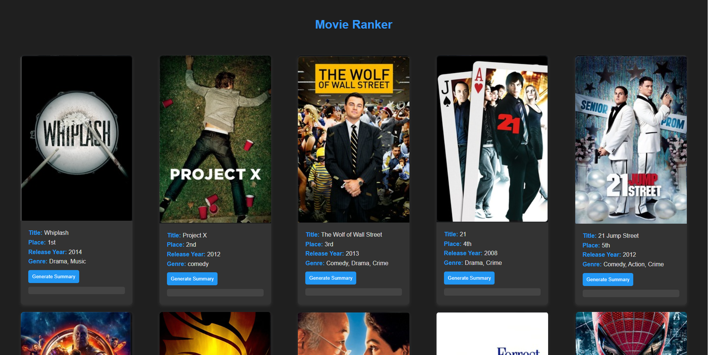

Introducing Movie Ranker
Looking for a reliable source to explore movies and get quick summaries? Look no further than Movie Ranker, a sleek web application powered by Azure Cosmos DB and the Hugging Face API.
Features
- Movie Listing: Dive into a curated list of movies complete with essential details.
- Movie Details: Get in-depth information about each movie with just a click.
- Summary Generation: Instantly generate movie summaries using the cutting-edge Hugging Face API.
- Dark Theme: Enjoy a stylish dark theme for a visually pleasing experience, day or night.
Getting Started
- Azure Cosmos DB: Create a Cosmos DB instance named 'Movies' with a container named 'Movies', and populate it with your movie data.
- Environment Variables: Configure your Azure Function App with the necessary environment variables, including CosmosDBEndpoint, CosmosDBKey, and HUGGINGFACE_API_KEY.
- Deployment: Deploy the provided Azure Function App containing the code.
- Accessing the Application: Once deployed, access Movie Ranker through the specified routes.
Usage Made Simple
Using Movie Ranker is simple:
- GetMovies: Head to the /GetMovies route to browse through the movie collection.
- GenerateSummary: Click on the "Generate Summary" button for any movie to receive an on-the-fly summary.
API Routes at Your Fingertips
Utilize Movie Ranker's API routes for seamless integration:
- GetMovies Route: Retrieve the list of movies by accessing the /GetMovies route via the GET method.
- GenerateSummary Route: Generate a summary for a specific movie by navigating to the /GenerateSummary route with the movie title as a parameter.